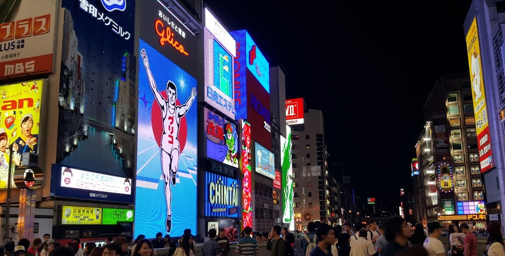

"오사카에 다녀왔다"라고 말하려면 반드시 거쳐야 하는 곳, 바로 오사카 도톤보리입니다. 난바역에서 내리자마자 느껴지는 활기찬 에너지, 화려한 네온사인과 거대한 간판들, 그리고 끊임없이 이어지는 맛있는 냄새까지! 이곳은 그야말로 오사카의 심장과도 같은 곳이죠. 워낙 유명한 만큼 사람도 많고 정보도 방대해서, 막상 가면 어디서부터 어떻게 즐겨야 할지 고민되실 수 있어요. 여행지에서의 시간을 1분 1초도 아껴서 알차게 즐기실 수 있도록, 트립스토어 에디터가 직접 발로 뛰며 찾아낸 오사카 도톤보리의 찐 매력 포인트와 숨은 꿀팁들을 쏙쏙 골라 정리해 드릴게요.
오사카 도톤보리에 왔다는 증거는 여기서 남겨야죠. 남들 다 찍는 뻔한 구도 말고, 조금 더 특별하게 인생샷을 남길 수 있는 명당과 즐길 거리를 소개합니다.

두 팔 벌려 달리는 글리코상은 도톤보리의 상징이죠.
보통 다리(에비스바시) 위에서 많이 찍으시는데, 거기는 항상 인파로 붐벼서 단독 샷을 건지기가 하늘의 별 따기예요.
꿀팁을 드리자면, 다리 아래쪽 강가 산책로(톤보리 리버워크)로 내려가 보세요.
사람들에게 치이지 않고 글리코상과 단둘이 있는 듯한 깔끔한 사진을 건질 수 있답니다.
특히 해가 지고 전광판에 불이 들어오는 저녁 7시 이후에 방문하면,
강물에 비친 네온사인이 더해져 훨씬 로맨틱한 분위기를 연출할 수 있어요